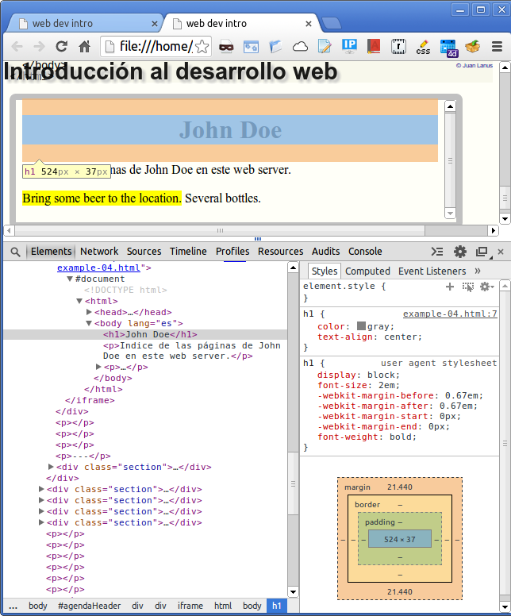
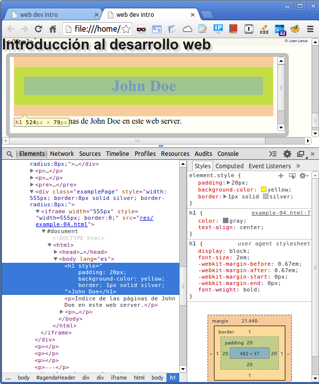

Presentación
Requisitos previos
Si bien es un curso inicial, que no requiere de conocimientos previos sobre el tema, los temas se presentan en profundidad desde el principio, evitando las introducciones demasiado simples que ofenden la inteligencia del alumno.
Para este curso solo se requiere que los estudiantes puedan usar la Internet: navegar páginas, mandar email, ese tipo de cosas.
Adicionalmente, es necesario poder usar el sistema de archivos de la PC y editar archivos de texto, aunque sea con un editor tan elemental como el Notepad de Windows.
Qué se aprende
El curso trata sobre las tres tecnologías sobre las cuales se basa toda la Internet (en realidad, la World Wide Web), que son HTML, CSS y JavaScript.
Si bien son tecnologías separadas, se las trata más o menos en conjunto, por que la realidad de las páginas web es así. Tratar de aprenderlas por separado es mucho menos eficiente, por la forma en que se relacionan entre sí.
El curso presenta una breve introducción (aunque no trivial) de cómo funciona la Internet. A continuación se presenta rápidamente los elelemtnso básicos de HTML y enseguida se incorporan los otros temas: CSS y JavaScript, para continuar avanzando con los tres en conjunto. De esta forma se pueden plantear ejemplos y trabajos más realistas, con mayor valor de aprendizaje.
Al terminar el curso exitosamente el estudiante pasa a ser una persona que "entiende" las tecnologías involucradas y ya puede usarlas en escenarios simples. Como son temas vastísimos, no es práctico intentar enseñar todo de una vez, pero luego de este curso el estudiante puede continuar aprendiendo con cursos adicionales o por cuenta propia, sobre una base firme.
Extras
Además de las tres tecnologías básicas, en el desarrollo de páginas para la Internet entran en juego muchísimos otros factores, como por ejemplo accesibilidad, usabilidad, seguridad, que si bien no se desarrollan en profundidad, están presentes donde corresponde por que son esenciales. También hay información, sugerencias y advertencias, sobre una cantidad de otros temas que no son parte de los lenguajes objeto del curso pero sí son partes de la cultura de la internet y es mejor tenerlos en cuenta desde el principio.
1 - La Internet
Esta sección es una introducción a las tecnologías que soportan la Internet. Se explica como funciona la Internet sin entrar demasiado en el detalle de esas tecnologías, pero sin que sea una explicacíon trivial.
La red ("net")

La "internet" es una "red" (en inglés "net") que nos provee servicio de conexiones de datos. No es la única red que nos provee servicios, existen la red eléctrica que conecta una usina donde se genera la electricidad con las casas de la gente, la red telefónica que conecta a las personas a través de una central y les permite comunicarse a distancia. Agua y gas son otros ejemplos, en los lugares donde están disponibles. También la televisión, por cable o de aire.

En el caso de la red eléctrica existe una fuente de energía electrica, en cualquiera de sus formas: usina, represa hidroeléctrica, generadores eólicos, planta atómica.

También hay una línea de transmisión que lleva la energía de la usina donde se la produce hasta el lugar donde se usa, generalmente una ciudad.
Y finalmente existen los lugares donde la energía eléctrica se consume, por ejemplo nuestras casas, donde la usamos para hacer funcionar las computadoras y algunos artefactos más.
La Internet tiene una configuración similar. Existen los "web servers" de donde provienen los datos que son análogos a las usinas, la red de transmisión que es lo que llamamos "Internet", y nuestra computadora donde usamos los datos.

Visualizamos la red como una nube: no vemos lo que tiene adentro (normalmente no nos interesa), y en cualquier parte donde nos conectemos da igual. Ultimamente ni siquiera es necesario un cable para hacer conexión: en muchos lugares la Internet está en el aire.
En las redes de energía eléctrica, agua, gas, televisión, hay un lugar donde se produce el contenido del servicio y otro lugar (nuestra casa, por ejemplo) donde se lo consume. Lo que esas redes llevan circula exclusivamente desde la fuente hacia el consumidor. La Internet es diferente: cualquier computadora que esté conectada puede ser a la vez proveedor y consumidor. El ejemplo más claro es el protocolo P2P de BitTorrent donde todos los que están conectados bajando un archivo a la vez también están oficiando de servers hacia sus pares.
Variedad de servicios vía Internet
La Internet es un canal de comunicación versátil que transmite una variedad de servicios. El más conocido es la "Web" o WWW por "World Wide Web", pero no es el único.
Hay otros servicios que usan la Internet como canal de comunicaciones:
- email, el correo electrónico
- instant messaging
- telefonía, especialmente en empresas
- juegos en línea
- varias formas de transferencia de archivos, incluído bit torrents
- VPN Virtual Private Networks, comunicaciones privadas a través de la red pública
- operación remota de computadoras usando SSH o Telnet.
Este cursito se refiere exclusivamente a la WWW por que es el servicio más usado, el que todos conocen, tanto que cuendo hablamos de buscar algo en la Internet en realidad nos referimos a la WWW.
El browser

Es el programa de la PC o smartphone que usamos para "navegar" la Internet. Hay varios, los más conocidos son
- Google Chrome
- Mozilla Firefox
- Opera
- Microsoft Internet Explorer
- Safari
Idealmente todos hacen lo mismo, muestran las "páginas" exactamente de la misma manera. En la realidad hay pequeñas diferencias que se van reduciendo paulatinamente.
Hay una institucion llamada "World Wide Web Consortium" o "W3C" ( "w" 3 veces y una "c") que trabaja definiendo "standards", normas detalladas de cómo debe aparecer cada elemento en la pantalla (en el curso iremos viendo qué elementos). Hay además un liderazgo de los developers de Mozilla tendiente a que todos los browsers se ajusten rigurosamente a las normas del W3C.
Es solo recientemente que se están alineando los planetas: todos los browsers tienden a funcionar de la misma manera, respetando las normas. Eso no fué así en los primeros años de la WWW. No había normas tan claras como las que existen ahora, y a la vez Microsoft intentaba diferenciar el Internet Explorer introduciéndole caracteríasticas incompatibles de manera de obligar a la gente a usarlo en vez de los otros.
Esas caracteríasticas diferentes, sumadas a los defectos de programación (bugs) que introducían sin proponérselo, hacían que fuera necesario un esfuerzo adicional de desarrollo muy significativo para que las páginas funcionaran en Internet Explorer. La imagen de abajo, del año 2006, lo explica claramente:

En particular, el IE6 fué en máximo exponente de estas dificultades, al punto que desde hace años hay una página dedicada a observar la declinación del uso del IE6 en el mundo, esperando a que llegue a un porcentaje tan bajo (< 1%) que no sea necesario tenerlo en cuenta.
Microsoft comenzó a tratar de hacer sus browsers compliant con las normas del W3C a partir del IE7; en 2014 el IE10 ya se puede decir que está bien.
Las páginas web son "archivos de texto", es decir, contienen solamente letras, números y símbolos (lo que hay en el teclado de una PC), y se pueden editar con editores de texto como Notepad o vim. El browser interpreta ese texto según las normas del W3C, lo combina con imágenes, videos y otros tipos de material y lo despliega en la pantalla.
El server

El server es una computadora que "está en la Internet". Lo que hace que sea un "web server" y no simplemente otra computadora más es que ejecuta permanentemente un programa que también se llama "web server".
La función del web server es recibir de los browsers los pedidos de páginas ("requests") y en respuesta, despachar las páginas que correspondan ("responses").
URL
Los requests de los browsers tienen un formato especial (también definido por el W3C) y se llaman "URLs". Por ejemplo el URL de la página de búsqueda en Google es:
https://www.google.com/
El web server de Google recibe ese request y envía la respuesta o "response", que en firefox se vé más o menos así (todos conocemos esta página):

Todo lo que hay en la Internet tiene su URL particular, absolutamente todo: cada página, cada imagen, ... No hay dos URLs iguales.
Además del URL, un request contiene "headers" que aportan información adicional.Hay headers para distintos datos, por ejemplo el formato de datos que espera el browser, el idioma, la codificación del texto (ej. Latin-1, UTF-8, ...), las cookies, el "referer", el "User-Agent" que identifica el browser, y más.
El header "referer" frecuentemente aparece como "Referer [sic]" por que tiene una falta de ortografía (la palabra correcta es "referrer" con doble "r"). Es la dirección (URL) de la página web anterior, donde se encuentra el link actual.
Query
En inglés, "query" significa "consulta". Un URL puede tener información adicional, llamada "query string", que comienza con un signo de interrogación. Por ejemplo para buscar "http request query" en Google el URL con query puede ser así:
https://www.google.com.ar/search?hl=en&noj=1&q=http+request+query
Lo que está antes del "?" es la dirección de la página o del servicio que debe procesar el request, lo que está a continuación es información adicional que se provee a esa página o servicio para especificar el resultado esperado.
Response
Lo que el web server envía es una cantidad de texto en lenguaje HTML, que se puede ver picando la página con el botón derecho del mouse y seleccionando "View Page Source" o algo similar, según el browser que se está usando.
Por ejemplo la parte de ese texto de la página de busqueda de Google que define el espacio donde uno escribe el texto de la consulta es así:
<input id=gbqfq class=gbqfif name=q type=text autocomplete=off value="">
El browser interpreta ese texto y otros, los combina, y muestra en la página el input donde se escribe el texto para la búsqueda:

¿Cómo funciona?
El browser y el web server se comunican a través de la Internet usando unos "protocolos" que se llaman HTTP o HTTPS y TCP/IP. Un protocolo es una serie de reglas detalladas sobre qué hacer en todas y cada una de las situaciones de una relación entre personas, países, o computadoras.
En la imagen se vé el protocolo "https" especificado al comienzo del URL:

El protocolo HTTP es para comunicaciones normales, y el HTTPS para comunicaciones encriptadas, en código, casi imposibles de descifrar. El protocolo TCP/IP es para que las diversas computadoras puedan hablar HTTP entre sí y se usa tanto para HTTP como para otros protocolos asociados a diferentes tipos de comunicaciones.
Los protocolos TCP/IP son los que hacen la magia de conectar vía Internet un browser de un lugar con un server que puede estar en el otro lado del mundo.
Por ejemplo http://www.ichikawafm.co.jp es la radio de Ichikawa, una localidad cualquiera de Japón en el otro lado del mundo. El URL termina con ".jp" en vez de ".ar" como los de Agentina.
Si ponemos el URL de la home page de la radio, la página aparece en el browser! ¿Cómo es posible, cómo funciona, si hay millones y millones de servidores web en la Internet, cómo hace para ir justo al que contiene la página que uno quiere?
No es magia. Vamos a ver una explicación un simplificada.
Nosotros, los humanos, entendemos nombres de servidores web como por ejemplo el de Google (google.com) o el de facebook (facebook.com).
Estos nombres de servidores se llaman "domains" (dominios). Los humanos hablamos entre nosotros usando los "domain names", por ejemplo decimos "entré a facebook".
Los programas de computadora usan en vez las direcciones "IP" de los servidores, que son unos números. Una computadora diría "entré a 173.252.110.27" (una IP de facebook).
La dirección IP del server de la radio de Ichikawa es
211.127.173.50. Esto se puede comprobar consultando la información
sobre la IP 211.127.173.50.
El browser averigua la IP de la radio consultando un servidor "DNS", un diccionario gigante que dice cuál es la IP de cada DNS. Entonces cuando el browser manda el request lo dirige a la dirección IP, no al domain name. Cada persona o empresa que publica una página tiene su domain name registrado en la red mundial de servidores DNS.
Nosotros podemos averiguar fácilmente la IP de un dominio usando el comando ping. Por ejemplo la IP de la radio de Ichikawa:

Hay otro diccionario, una especie de mapa de la red, que dice qué IPs están conectadas con cuales otras. La implementación del protocolo TCP/IP que se está ocupando de hacer progresar el request consulta ese diccionario de conexiones o rutas y va de "hop" en "hop" (un "hop" es un salto) saltando de un "router" a otro y aproximándose así a su destino final. Podríamos pensar que primero averigua cuál router le conviene para una IP que comienza con 211 y salta a ese router. Una vez ahí averigua cuál router le conviene para IPs 211.127... y así sucesivamente. Un router es otra computadora, con programación especializada para "rutear" mensajes en la red.
Ejemplo de la ruta de un request
La ruta desde el servicio Network-Tools.com (206.123.64.46) hasta la radio de Ichikawa pasa por una cantidad de routers, como se puede apreciar en el siguiente "traceroute" (rastreo) de 16 hops:
TraceRoute from Network-Tools.com to 211.127.173.50 [dns.ichikawafm.co.jp]
| Hop | (ms) | (ms) | (ms) | IP Address | Host name |
|---|---|---|---|---|---|
| 1 | 0 | 0 | 0 | 206.123.64.46 | - |
| 2 | 0 | 0 | 0 | 64.124.196.225 | xe-4-2-0.er2.dfw2.us.above.net |
| 3 | 0 | 0 | 0 | 64.125.27.81 | ae2.cr2.dfw2.us.above.net |
| 4 | 8 | 8 | 8 | 64.125.21.138 | ae3.cr2.iah1.us.above.net |
| 5 | 43 | 43 | 43 | 64.125.25.53 | ae2.cr2.lax112.us.above.net |
| 6 | 66 | 93 | 66 | 64.125.31.233 | ae1.cr2.sjc2.us.above.net |
| 7 | 73 | 48 | 49 | 64.125.25.118 | xe-3-2-1.mpr2.pao1.us.above.net |
| 8 | 52 | 51 | 51 | 64.125.31.61 | xe-1-0-0.mpr1.pao1.us.above.net |
| 9 | 49 | 49 | 49 | 64.125.13.74 | above-jptelecom.pao1.us.above.net |
| 10 | 162 | 162 | 162 | 210.142.163.205 | stoac-02-te0-2-0-3.gw.odn.ad.jp |
| 11 | 160 | 160 | 160 | 143.90.33.202 | cbcrk-05g3-0-0.nw.odn.ad.jp |
| 12 | 149 | 149 | 149 | 143.90.192.218 | cbcrw-01g1-1.nw.odn.ad.jp |
| 13 | 147 | 147 | 146 | 211.127.123.133 | fnafr-01a.nw.odn.ad.jp |
| 14 | 176 | 162 | 162 | 211.127.123.55 | fnafx-05.nw.odn.ad.jp |
| 15 | 149 | 149 | 149 | 211.127.173.49 | - |
| 16 | 165 | 165 | 165 | 211.127.173.50 | dns.ichikawafm.co.jp |
Empieza desde la IP de Network-Tools.com 206.123.64.46 en St Louis, USA. Se
vé que en menos de 50 milisegundos pasa por 8 routers del dominio
us.above.net también en USA (teniendo la IP podemos averiguar que
todos están cerca de New York) antes de llegar al Pacífico (se nota por las
las IPs "143" y "211"). Una vez allí pasa por 6 routers de Australia y Japón
antes de llegar a la radio de Ichikawa.
De la consulta sobre la IP surge que todos los números de IP desde 211.120.0.0 hasta 211.127.255.255 están en Japón. También surge que este rango de 520280 direcciones IP es uno de los 3026 rangos que tiene Japón para sus 127 millones de habitantes.
Hay solamente 4000 millones de direcciones IP, o sea muy pocas. Están asignadas por bloques de números consecutivos, como las 211.12x.xxx.xxx que corresponden a Japón. Suponiendo que todos los bloques de asignaciones fueran como este, de medio millón de direcciones, entonces para el total de 4000 millones de IPs habría unos 8000 bloques de medio millón de IPs cada uno y se necesitaría un índice de 8000 direcciones para saber dónde se encuentra cada bloque, un tamaño que para una computadora no es ni remotamente impresionante.
Resumiendo
Aquí terminó la información técnica inicial sobre la Internet, algunos conceptos básicos necesarios para entender lo que viene. Sin esa información, la Internet es pura magia :-)
Ahora sí pasamos a ver cómo son las páginas.
Actividades
- Averiguar la dirección IP del sitio wikipedia.org
- Averiguar la dirección IP del sitio
- Usando http://www.dnsstuff.com/tools:
- averiguar el límite inferior del rango de IPs del bloque al que pertenece la IP 201.212.0.6 (IP Range - Start)
- Averiguar el límite superior del rango de IPs del bloque al que pertenece la IP 201.212.0.6 (IP Range - End)
- Averiguar a qué país está asociada la IP 201.212.0.6
IP Range - Start 201.212.0.0 - IP Range - End 201.212.127.255
2 - Las páginas web
El lenguaje HTML
Cuando un web server recibe un request de un browser, elabora y devuelve un "response" (respuesta), que es un texto en lenguaje "HTML". Vamos a ver cómo es ese lenguaje, para aprender a usarlo.
El response que el web server manda puede ser HTML que está en un archivo en el server y en ese caso se trata de una página "estática".
También puede ser HTML que el server arma en ese momento con información de una base de datos. Por ejemplo si consultamos twitter para ver lo que hay relacionado con un tag cualquiera como #pizza, el server hace una consulta a una base de datos y arma una página especial para el request. En este caso se trata de una página "dinámica".
Nosotros vamos a hacer páginas estáticas para empezar, páginas que están registradas en archivos.
Primera página
Una página mínima es, por ejemplo:
<!doctype html>
<html>
<head>
<meta http-equiv="content-type" content="text/html; charset=utf-8">
<title>J Doe - index</title>
</head>
<body lang="es">
<h1>John Doe</h1>
<p>Indice de las páginas de John Doe en este web server.</p>
</body>
</html>
Usando un editor de texto la grabamos en un archivo
C:\paginas\index.html en Windows, o
~/paginas/index.html en Linux.
Para abrirla con el browser le aplicamos un doble click y la página se despliega; en Chrome se ve así:

y en Firefox:

Tags
El HTML define "elements" como "h1" y "p", delimitándolos con "tags" (etiquetas). En el listado de abajo (que es igual al anterior) los tags están resaltados con amarillo.
<!doctype html> <html> <head> <meta http-equiv="content-type" content="text/html; charset=utf-8"> <title>J Doe - index</title> </head> <body lang="es"> <h1>John Doe</h1> <p>Indice de las páginas de John Doe en este web server.</p> </body> </html>
Se observa que hay tags de apertura y de cierre, como <p>
y </p>, o <html> y
</html>. El tag de cierre lleva una "/" delante del tag
name. Lo que se encuentra entre el tag de apertura y el de cierre es el
"contenido".
En HTML los tags se pueden escribir en mayúsculas o minúsculas, el efecto es el mismo, pero escribirlos en mayúsculas hace que el HTML parezca anticuado.
<p>
El elemento "p" (llamado "paragraph" = párrafo) está delimitado por el
start tag <p> y su correspondiente end tag
</p>. Los elementos <p> son para contener texto,
similares a los párrafos de un libro.
<h1>
El elemento "h1", llamado "heading 1" (título 1 ó encabezado 1) también contiene texto, como un paragraph, pero está concebido para contener un título importante. Existen además elementos h2, h3, h4, h5 y h6 que son títulos de importancia decreciente. En el ejemplo se ve una jerarquía de títulos de secciones cada vez menos abarcativos:
| h1: | Planeta Tierra |
| h2: | América del Sur |
| h3: | Argentina |
| h4: | Santa Cruz |
| h5: | Caleta Olivia |
| h6: | Barrio Perito Moreno |
<body>
El tag <body> no contiene texto directamente, como p y
h1, sino que contiene otros tags. Decimos entonces que el elemento body es un
"container" (contenedor, en mal castellano).
"Body" quiere decir cuerpo, y este tag contiene todo el cuerpo de la página, completa.
El protocolo "file"
Pudimos abrir una página en el browser, pero ¿dónde está el web server? Bueno, en este caso la paginita no está publicada en la Internet sino en nuestra PC y el browser en vez de accederla vía Internet la accedió a través del sistema de archivos de la PC.
En este caso el URL no especifica el protocolo HTTP (no comienza con
"http://") sino que especifica el protocolo file (comienza con "file:///") y el
URL del archivo es: file:///C:/paginas/index.html.
Para que el archivo se abra en el browser con potocolo file solo es necesario darle doble-click, como cualquier otro tipo de archivo. El sistema operativo (Windows, Linux) sabe con qué programa abrir los tipos de archivo conocidos como este, que es .html. También se puede escribir el path del archivo en la dirección del browser.
El protocolo file se puede usar para pruebas hasta cierto punto, luego es necesario usar un web server. Es posible ejecutar un web server de prueba en la propia PC, y más adelante vamos a hacerlo.
Display mode
Los tags definen elementos, que son las piezas de la página.
El browse lee el HTML, lo interpreta, y construye internamente una estructura de datos que se llama "DOM" (por Document Object Model) y se usa intensamente en el desarrollo de la interacción de las páginas modernas.
Además de construír el DOM, al browser "renderiza" la página en el "viewport", el espacio que queda para la página en la ventana del browser luego de quitar las barras de herramientas, los bordes y la barra de título.
Cada tipo de elemento se renderiza con el estilo que le corresponde, por ejemplo para el h1 se usa una tipografía (font) más grande que para un p.
Dentro de las características de los elementos una importante es "display mode", que tiene dos modos principales: "block" e "inline" (bloque y en línea).
La diferencia es que los block elements se renderizan "en su propia línea", mientras que los inline elements se renderizan a continuación del anterior en la misma línea (si hay espacio).
La página ejemplo contiene dos block elements visibles, h1 y p. El p se renderiza abajo del h1 aunque haya espacio en el viewport para renderizarlo a continuación.
Agregamos un elemento inline modificando ésta línea, así:
<p>Indice de las páginas de <strong>John Doe</strong> en este web server.</p>
y desplegamos la página en el browser, que ahora se vé con el nombre resaltado en el elemento p:

El elemento strong (fuerte) es un inline element, que el
Firefox renderiza mostrando el texto que contiene en negrita (bold).
Hay muchos otros display modes, pero "block" e "inline" son los más importantes y es necesario comprenderlos bien.
Por último, si hiciéramos que cada elemento de la paginita anterior tuviera un borde azul, esto es lo que se vería:

El borde más externo es el elemento <html>. Dentro de éste hay un poco de margen y está el borde del <body>, que contiene el <h1> y el <p> abajo, separados por algo de margen.
Dentro del <p> está el borde del elemento <strong>, en la misma línea por que strong es un inline element.
3 - Más detalles de la página ejemplo
Considerando nuestra página ejemplo:
<!doctype html>
<html>
<head>
<meta http-equiv="content-type" content="text/html; charset=utf-8">
<title>J Doe - index</title>
</head>
<body lang="es">
<h1>John Doe</h1>
<p>Indice de las páginas de <strong>John Doe</strong> en este web server.</p>
</body>
</html>
vamos a ver en detalle los elementos doctype, html, head y body que quedaron sin explicar.
Estos elementos van en todas las páginas correctamente codificadas, que son las que pasan el test de validación del W3C.
Los browsers perdonan errores en el HTML que digieren, por ejemplo páginas que les falta alguno de estos elementos, o que no tienen ninguno. Pero los ponemos por que queremos tener control sobre cómo se va a renderizar nuestra página en el browser.
doctype
Históricamente, hubo HTML2, HTML 3, HTML 4, y ahora hay HTML 5 o simplemente HTML (no más números).
La declaración "doctype" le dice al browser con cuál versión de HTML queremos que interprete nuestra página.
Siempre queremos que nuestras páginas sean HTML5, el más poderoso, el más simple.
Si falta el doctype el browser funciona en "quirks mode", que se podría traducir "modo caprichos" o "modo extravagancias". Resulta que los primeros browsers intentaban corregir los defectos del HTML que procesaban, pero cada browser lo hacía a su manera por que no hay una norma para eso. El resultado es que los distintos browsers mostraban las páginas defectuosas de maneras diversas.
Haciendo páginas correctas (validadas) y poniéndoles el doctype obligamos al browser a portarse de una manera conocida, y todos los fabricantes de browsers están de acuerdo para hacer algo coherente liderados por el W3C y los developers de Mozilla (los que hacen el Firefox).
Y como nuestras páginas son nuevas no queremos tener nada que ver con
versiones antiguas de HTML, así que siempre ponemos<!doctype
html>.
<html>
A continuación del doctype empieza el HTML y lo marcamos abriendo el tag
<html> aquí y cerrándolo al final. El contenido del tag
html es toda la página.
El html tiene dos partes, "head" (encabezado) y "body" (cuerpo).
<head>
Esta parte de la página contiene información sobre la página pero que no es la página (metadata). No es contenido que se muestra sino información sobre cómo tratar el contenido que viene en el <body>.
content-type
La especificación
<meta http-equiv="content-type" content="text/html; charset=utf-8">
dice que se trata de texto en lenguaje HTML
(content="text/html) y que la codificación del texto es UTF-8.
Existen unos cuantos "content-type" diferentes, que se usan para identificar el tipo de contenido que se está comunicando. Es algo parecido a la extensión de los archivos en Windows: la extensión dice qué es lo que hay dentro del archivo, el content-type dice cuál es el formato de los datos que el browser está recibiendo (o enviando).
También hay unos cuantos "character encoding". Tienen que ver con la relación entre lo que tienen los bytes del texto y cuáles caracteres se muestran a partir de esos bytes.
Por ejemplo un byte con 01000001 en sus 8 bits se representa
como una "A" mayúscula, pero esto no es una cualidad inherente a esa
configuracíon de bits. Hay una especie de acuerdo gigante entre millones de
personas de todos los países para relacionar el contenido de los bytes con los
caracteres que se muestran en el monitor o la impresora. En este momento UTF-8
es la codificación más usada, tanto por los occidentales que tenemos
alfabetos con unos pocos caracteres, como también por los orientales que usan
alfabetos de miles de caracteres.
title

Es el título de la página, que se muestra en la pestaña del browser, y también cuando la página aparece en una lista.
Como a veces hay muchas pestañas abiertas, y entonces el espacio en cada una solo permite mostrar un texto cortito, escribimos el title poniendo lo más relevante al principio.
En el caso del ejemplo un título válido podría haber sido "Indice de las páginas de John Doe", pero si tuviéramos abiertas las páginas índice de diez personas distintas solo veríamos algo como "Indice de..." diez veces, que no es útil. En cambio en la forma en que este title está redactado veríamos la inicial y las primeras letras del apellido de las diez personas. Como "Doe" es un apellido cortito posiblemente se vería completo.
<body>
Finalmente el body tag contiene el contenido de la página, lo que se va a desplegar en el viewport. La forma recomendada de escribir el tag es con una property (propiedad) lang, así:
<body lang="es">
Esto le dice al browser que comienza un body en español: "es" es el código para español en general, "es-ar" sería español de Agentina. Obviamente para páginas en otro idioma usamos el código que corresponda, como "en" para English.
Nos importa que se sepa en qué idioma está escrita la página. Es
especialmente importante para las búsquedas con Google u otro: si elegimos
"ver las páginas en español" vamos a ver las páginas que tienen
<body lang="es"> o algo equivalente, las demás se omiten.
Los buscadores tienen un tipo de browser especial que se llama "web crawler" (rastreador web), que permanentemente recorre la Internet haciendo un índice de todas las páginas, el índice gigante que se usa para las búsquedas. En ese índice el crawler anota el idioma de la página, pero si no figura explícitamente puede que el crawler no sea capaz de identificar el idioma de la página. Esto es muy malo. Imaginemos que se trata de la página de una pizzería online y alguien quiere hacer un pedido. Hace una búsqueda de pizzerías de la zona, solo las páginas en español: nuestra pizzería no va a figurar y se va a perder muchas ventas.
Actividades
- Grabar un archivo con la página ejemplo
- Abrir la página ejemplo en todos los browsers que hata en la PC
- Modificar la página ejemplo para reemplazar el nombre "John Doe" por el propio del estudiante y abrirla en un browser
4 - Imágenes
<img>
El tag para desplegar imágenes en HTML es <img>. Su
display mode no es block sino inline, por eso podemos  insertar
insertar  imágenes
imágenes  en
en  el
el  texto.
texto.
Además, img es un "empty tag" (tag vacío). Esto significa que no tiene
"contenido" como el h1 y el p que contienen texto, y por lo tanto img no lleva
tag de cierre </img>.
Hay unos pocos empty tags, por ejemplo <br> y
<hr> que veremos más adelante. Son pocos. En XHTML, una
variante de HTML que exige que todo tag se cierre, se usa una barra así:
<img ... /> para cerrarlo. Si se pone no hace daño aunque
solo es necesaria en XHTML.
href
El tag img no tiene contenido, pero tiene "attributes". El más básico es href, que ćontiene la referencia al archivo a la imagen que queremos desplegar con este tag:
<img src="res/iconLinkedin20x20.png" ...>
Es una referencia a un archivo. Hay que tener en cuenta algunas cosas.
Primero, los directorios se separan con "forward slashes" en vez de "back slashes" como en Windows, se usa "/" en vez de "\" como en Linux y Unix.
Segundo, la referencia del ejemplo es "relativa" respecto de la página donde está en tag. Por ejemplo si la página estuviera en una PC con Linux (la gran mayoría de las páginas de la Internet están en máquinas Linux), en el archivo:
/webPages/examples/index.html
entonces la imagen esta en:
/webPages/examples/res/iconLinkedin20x20.png
En Windows los archivos serían, por ejemplo:
C:\webPages\examples\index.html C:\webPages\examples\res\iconLinkedin20x20.png
La parte grisada de las direcciones se puede cambiar, los archivos pueden estar en cualquier otra ubicación dentro del sistema de archivos de la PC. Lo importante es que la imagen esté en un subdirectorio res debajo del directorio donde está la página html.
alt
Hay personas que no pueden ver las imágenes, tampoco pueden verlas los crawlers.
Pensando en la gente que no puede verlas, cada imagen en nuestras páginas lleva un atributo "alt" que significa algo así como una alternativa a la información de la imagen. Se trata de hacer que la página sea accesible también para las personas que no pueden ver.
Se aconseja redactar el texto del atributo alt como si uno estuviera explicándole la imagen a otra persona, por teléfono.

Ejemplo de atributo alt:
<img src="res/320px-Smiley_Face.png" alt="carita feliz">
Si el atributo href no apunta a un archivo con una imagen que el browser pueda mostrar, en vez de la imagen muestra el texto alt. El el siguiente tag img:
<img href="noExiste.png" alt="imagen que no está">
se vé así:
Más atributos del tag <img>
El tag img tiene una cantidad de atributos, como se puede ver en la documentación publicada por MDN. De todos estos atributos algunos están en estado "deprecated" u "obsolete". "Deprecated" se aplica, en programación, a un feature que si bien está disponible, en el futuro no va a estar más. "Obsolete" significa que ya no está más.
- align Deprecated since HTML4.01, Obsolete since HTML5
- alt
- border Deprecated since HTML4.01, Obsolete since HTML5
- crossorigin HTML5
- height
- hspace Deprecated since HTML4.01, Obsolete since HTML5
- ismap
- longdesc HTML 4 only
- name Deprecated since HTML4.01, Obsolete since HTML5
- src
- width
- usemap
- vspace Deprecated since HTML4.01, Obsolete since HTML5
Así que quedan siete, de los cuales ya vimos dos.
"Crossorigin" es nuevo en HTML5 y lo veremos oportunamente. Tiene que ver con una restricción de seguridad que obliga a que todos los archivos que el browser usa en una página provengan del mismo dominio web. Es para protección contra virus.
"Height" y "width" (alto y ancho) informan al browser de las medidas de la imagen. Cada imagen tiene sus medidas, se pueden ver picando la imagen con el otro botón del mouse y eligiendo verla en otro tab: usualmente el title del nuevo tab contiene las medidas de la imagen.
Si no especificamos medidas el browser va a desplegar la imagen en su tamaño original.
Cuando el browser conoce las medidas de las imágenes puede prever los espacios que van a usar y reservarlos anticipadamente. Si la imagen tarda un poco en bajar ya tiene su lugar y no se mueve todo el contenido de la página cuando llega.
Si se especifican dimensiones diferentes de las de la imagen el browser cambia el tamaño de la imagen para que ocupe todo el espacio definido. Una imagen de 1000x800px (pixels) se puede mostrar en un tag img con dimensiones menores en una página índice con versiones pequeñas de las imágenes. El HTML pra la versión full-size y la muestra puede ser así:
<img href="paisaje.png" alt="paisaje" width="1000" height="800"> <img href="paisaje.png" alt="paisaje" width="100" height="80">
En el ejemplo de la imagen chica en vez de height="80" se puede poner height="auto" para que el browser calcule la altura manteniendo las proporciones del formato original, obviamente 80 en este caso.
Abajo se ve una misma imagen desplegada en diferentes tamaños:
width=auto |
width=auto |
width=auto |
sin medidas (182 x 256) |
|---|
"Ismap" y "usemap" tienen que ver una imagen que, según dónde se pica, muestra un resultado diferente. No lo vemos en detalle.
Formatos de archivos que contienen imágenes
Hay una variedad de tipos de archivo que contienen imágenes. En HTML se puede usar los más comunes:
Independientemente del formato del archivo de donde proviene, cuando la imagen se despliega en la página, consiste en un arreglo de "pixels", puntos luminosos de colores. Las diferencias entre los diferentes los formatos están en la compresión, la cantidad de colores y la posibilidad de transparencia.
JPEG es un formato para fotos. Las cámaras digitales producen imágenes en este formato. Las imágenes almacenadas en archivos .jpg están comprimidas, usando una técnica que reduce la calidad de la foto cuanto más se comprime. Se puede elegir entre alta calidad y alto tamaño, o menor calidad y tamaño que puede llegar a ser muy chico.
Abajo hay tres JPEGs de una misma imagen con niveles de calidad 100, 50 y 1:

100%: 140120 bytes

50%: 21633 bytes

1%: 1666 bytes
No hay una gran pérdida de calidad en la segunda imagen respecto de la primera, pero en cambio el tamaño del archivo se redujo a menos de un sexto, aproximadamente. La tercera imagen es de mala calidad, con una reducción de tamaño de 84 veces.

GIF: El GIF es un formato que solo puede manejar 256 colores diferentes en cada imagen.
Uno de esos colores puede ser "transparente", esto le dió al formato GIF una ventaja sobre otros formatos contemporáneos.
Otro factor de éxito de este formato fueron los GIFs animados.
El uso de GIFs animados está más desaconsejado todavía por que son molestos. A fines de los años '90 estuvieron de moda; en las páginas todo titilaba o se movía, y por clamor general de dejó de usar. Mejor sigamos así :-)
Estaba patentado por compuserve. Por esta razon muchos sitios evitaban usarlo, ante el peligro de que el dueño de la patente les reclame el pago de derechos. Actualmente la patente está vencida y el formato pasó a ser del dominio público.
PNG (Portable Netwoks Graphics) es un buen formato, libre, diseñado para la Internet. Lo de "portable" se refiere a la posibilidad usarlo en cualquier sistema operativo (no como el formato BMP que es de Windows).
Soporta transparencia. A diferencia del GIF que puede tener pixels 100% transparentes o 100% opacas, el formato PNG soporta un "alpha channel" que permite aplicar niveles de transparencia particulares a cada pixel de la imagen. Se puede hacer imágenes translúcidas.
SVG (Scalable Vector Graphics) es un formato vectorial en dos dimensiones, para crear imágenes sintéticas. Los gráficos se crean usando un programa gráfico como Inkskape y se graban en archivos de texto que, en vez de pixels, tienen descripciones de formas y colores. "Scalable" quiere decir que los gráficos se pueden ampliar indefinidamente sin que pierdan calidad. No es para paisajes o retratos. El auto de abajo es una imagen generada con SVG:

BMP es un formato antiguo de Windows, frecuentemente sin compresión: los archivos suelen ser enormes. Actualmente casi no se lo usa.
<figure>
En HTML5 hay un nuevo tag "figure" que eventualmente reemplazará a img para algunos usos, pero que por el momento no se usa mucho por que hay mucha gente que todavía tiene browsers que no soportan este tag.
---
Actividades
- Agregarle a la página ejemplo una imagen, debajo del tag h1, por ejemplo una foto de uno mismo
- Abrir la página modificada con la imagen en algún browser
- Insertar en el encabezado de la página la misma imagen de la actividad anterior, pero de tamaño chico
5 - Links

La magia de la Internet se apoya principalmente en los links. El HTML tiene la "H" en su nombre por "hyperlink", la característica que lo hace especial.
En HTML los links se definen con el tag <a>. Por ejemplo
un link elemental, a la página inicial de twitter, es así:
<a href="http://twitter.com">twitter</a>
Este mismísimo link en una página se vería así: twitter, de donde se deduce que es no es un elemento block sino inline y por lo tanto es posible insertar links en el texto normal de una página.
No es un empty element, por lo tanto requiere tag inicial y de cierre. El texto que se despliega en la página (en este caso solo la palabra "twitter") es el contenido que está entre los tags de cierre y apertura.
Al poner el cursor del mouse sobre el texto del link, la flechita default se
convierte en una manito. Al picar sobre el link la página que está mostrando
el browser se reemplaza por la página donde apunta el link, tomada del
atributo href.
Tradicionalmente los links se muestran con texto azul y subrayados, pero la mayor parte de las páginas web aplican estilos a los links para cambiarles la apariencia, usando CSS, que se va a presentar más adelante en este curso.
href
El link del ejemplo:
<a href="http://twitter.com">twitter</a>
contiene el atributo "href" que le informa al browser el target (objetivo) del link. El nombre "href" significa "hyperlink reference" y es un URL (Uniforn Resource Locator).
Según como sea el URL del link, el resultado será diferente. Vamos a ver cómo es un URL y luego vemos las variantes de links.
Anatomía de un URL
Un URL más completo puede ser así:
http://productos.ejemplo.com.ar/seccion12/lista.html#item14
No todas las partes del URL aparecen en todos los links, y dependiendo de cuáles partes figuran en link, éste funciona de maneras diferentes.
Veamos cada una de las partes. El "target" (donde apunta el link) es el "item14" de una lista que pertenece a la "seccion12":
| protocol | http:// |
El nombre de esta parte es "scheme name", pero normalmente se lo llama "protocolo", puede ser "http://", "https://" para comunicaciones encriptadas (como cuando se hace un pago con tarjeta de crédito), "mailto:" cuando es un link para enviar email, "ftp://" para FTP (un protocolo de transferencia de archivos), "file:///" y otros. |
|---|---|---|
| domain | productos. |
La parte "ejemplo.com.ar" es el nombre del dominio, que en los casos
de empresas tiende a ser igual al nombre de la empresa. La terminación
"com.ar" indica que es un dominio comercial de Argentina.
"productos" es el "hostname", el nombre de un servidor dentro de ejemplo.com. |
| path | seccion12/ |
La ubicación del target dentro del dominio. Es un "path", con directorios y sub-directorios como en el sistema de archivos de una PC. |
| fragment |
|
Se llama "fragment" y especifica una ubicación dentro del archivo "lista.html". |
Un URL completo tiene más partes, pero por ahora tenemos suficiente. Volvemos al tema de los links.
Según qué partes del URL figuran en el atributo href del link, el comportamiento será diferente.
fragment
<a href="#item14">Item n° 14</a>
Este es un link a otra parte de la misma página donde está el link. Es el caso cuando la página tiene un índice con una lista de ítems y picando el nombre de un ítem la página se reposiciona para ver la información de ese ítem, sin recargarla.
El nombre "item14" que figura en el atributo href link debe coincidir con el atributo "id" del link target. Por ejemplo si el target fuera un encabezado h5 podría ser:
<h5 id="item14">El ítem 14</h5>
Dos consideraciones:
- El id no lleva el hash "#" adelante.
- El id es case-sensitive: deben coincidir las mayúsculas y minúsculas exactamente. No es lo mismo "#Item14" que "#item14".
- No debe haber dos elementos en la página que tengan el mismo id.
- El id se escribe con letras, números y underscore "_", no debe comenzar con un número.
El caso extremo de link mínimo es solamente un hash: href="#".
Es un link a ninguna parte, un link no operativo. Se suele usar cuando se está
escribiendo una página mientras no se sabe exactamente el target real:
inicialmente todos los attributos href son href="#" y a medida que el trabajo
progresa se reemplaza el hash por el URL que corresponde. Al picar en un link
con este href la misma página se vuelve a cargar.
path
Un link con solo el path en una página apunta a otra página dentro del mismo sitio.
Ejemplo:
<a href="otraPagina.html">Link a otra página</a>
El browser arma un link completo sustituyendo las partes que faltan con lo de la página actual. Eso se puede comprobar estacionando el cursor sobre el link: en la status bar del browser se vé el link compuesto.
Si la página actual es
http://www.ejemplo.com/curso1/ejemplos/estaPagina.html
el URL compuesto sería
http://www.ejemplo.com/curso1/ejemplos/otraPagina.html
Este es un "relative link" por que el URL es relativo a la página actual. Una variante muy similar, que suele confundirse, es el "absolute link", que comienza con una "/".
La "/" inicial significa que el link no es relativo a la página actual sino al inicio del sitio. El mismo link del ejemplo anterior sería:
<a href="/curso1/ejemplos/otraPagina.html">Link a otra página</a>
El link relativo supone que estaPagina.html y otraPagina.html están en el mismo diretctorio en el server. Si una de las dos páginas se cambiara de lugar el link dejaría de funcionar, se convertiría en un "dead link", un defecto de las páginas que siempre se trata de evitar por que le transmite al usuario una sensación de sitio de mala calidad, descuidado, y necesariamente le hace pensar que los productos de esa empresa también deben ser de calidad dudosa.
---
6 - Estilos
Nuestra página ejemplo no tiene estilo. Hasta ahora solo contiene HTML, y el HTML aporta estructura que soporta el contenido.
La estructura se expresa vía los tags de encabezados (h1,
h2, ...), párrafos (p), y otros que veremos más
adelante.
El contenido, obviamente, es el texto contenido por esos tags.
Pero tal como está ahora hay una cierta monotonía. Si agregáramos más párrafos todos lucirían igual, tendrían el mismo aspecto visual, como en una novela.
Browser default style
De hecho, cada
browser viene con una definición del estilo que usa para desplegar cada
tipo de tag. Por ejemplo todos los browsers despliegan los elementos
h1 con una tipografía grande y pesada, los
h2 menos grandes y pesados, etc. Los elementos
p aparecen desplegados con la tipografía que podría
considerarse "normal", algo así como el texto ingresado en un procesador de
texto antes de cambiarle nada.
Además de la tipografía, el estilo default del browser incluye márgenes, "paddings" y otros como el "display mode" que sabemos que puede ser "block" o "inline" y que hay otras opciones, o la dirección de lectura de izquierda a derecha común en los países occidentales.
Nuestra página ejemplo, versión inicial, contiene el siguiente HTML:
<!doctype html>
<html>
<head>
<meta http-equiv="content-type" content="text/html; charset=utf-8">
<title>J Doe - index</title>
</head>
<body lang="es">
<h1>John Doe</h1>
<p>Indice de las páginas de John Doe en este web server.</p>
</body>
</html>
La página se ve así:
Tradicionalmente, desde los comienzos de la web, si no se especifica una tipografía el browser usa "Times New Roman" o alguna similar.
CSS
El estilo de las páginas se define usando el lenguage llamado CSS por "Cascading Style Sheets": hojas de estilo en cascada.
Lo de "cascada" se refiere a que el browser especifica su estilo default, como vimos recién. Es posible cambiarlo agregando un archivo CSS con especificaciones que se superponen a las del browser y las reemplazan.
Todavía es posible agregar tags style dentro de la página
HTML con nuevas especificaciones que anulan y reemplazan a las anteriores.
Y por último a nivel de tag se puede aplicar estilos que tienen prioridad sobre los anteriores.
Esto que parece una idea buenísima que aporta un montón de flexibilidad, en la práctica termina siendo una pesadilla y los que saben recomiendan no incluír CSS dentro de los archivos HTML.
Nosotros vamos a desoír esa recomendación, por razones prácticas: la
comodidad de poder ver el HTML y el CSS juntos, y por que nuestra página
ejemplo es microscópica. Cada nuevo ejemplo será un nuevo archivo con el CSS
y el HTML juntos, con la salvedad de que todas las especificaciones CSS
estarás aborregadas en un único tag style como estarían en el
archivo separado que recomendamos para páginas de verdad. Y la recomendación
incluye el tradicional "chicos, no intenten hacer esto en casa!".
Sintaxis del lenguage CSS
Una especificación CSS consta de selectores y reglas. Así:
h1 { color:gray; text-align:center; }
El selector es h1. Todas las reglas enumeradas entre el par de
llaves {} se aplican a los elementos seleccionados por el selector, que en este
caso son los elementos h1.
Al final de cada regla va un ";" que no es obligatorio al final
de la última regla.
Cuando hay repetición la regla que aparece última gana, por ejemplo en el caso:
p { color:green; }
p { color:blue; }
los elementos p se van a desplegar de color azul.
<!doctype html>
<html>
<head>
<meta http-equiv="content-type" content="text/html; charset=utf-8">
<title>J Doe - index</title>
<style>
h1 { color:gray; text-align:center; }
</style>
</head>
<body lang="es">
<h1>John Doe</h1>
<p>Indice de las páginas de John Doe en este web server.</p>
</body>
</html>
Como era de esperar, todos los elelemtos h1 se despliegan en
color gris y centrados. Es así de sencillo, solo que no es tan sencillo. En la
práctica las páginas "de verdad" terminan teniendo archivos CSS con miles de
registros, de una complejidad abrumadora. Pero la idea es simple: seleccionamos
elementos y les aplicamos reglas. Es un lenguaje declarativo.
Selectores
En el primer ejemplo de CSS vimos un selector que selecciona los elementos por tipo y se llama type selector. Hay muchos otros tipos de selectores, que se usan para seleccionar por una importante diversidad de criterios.
La autoridad que define el lenguaje CSS es el W3C. El nivel del lenguaje CSS puede ser 2.1 o 3, este último está asociado al HTML5 que está cundiendo rápidamente. El nivel 3 incluye lo del nivel 2.1 y lo aumenta.
El documento donde definen esta versión del lenguaje es "Selectors
Level 3". En ese documento, complejo y extenso, hay una sección "2.
Selectors" donde resumen la sintaxis de los selectores. El selector
genérico "E" que usan es cualquier type selector, como el
h1 de nuestro primer ejemplo.
Los tipos de selectores que más se usan son los de clase
(E.warning en el documento del W3C) y los de id
(E#myid en el documento).
Los selectores se pueden combinar, por ejemplo
h1.urgent selects the h1 elements that have scall
"Urgent".
Atributos id y class
En la sección fragment del tema URL vimos cómo se
podía asignar un atributo id a un elemento y usarlo para linkear
exactamente a ese fragmento de la página.
El id es la identificación del elemento y se usa también en
los selectores CSS. El id tiene la restricción de que no puede
haber dos iguales en una página, por eso es un buen selector, por que es muy
selectivo.
Como su uso es tan común los selectores de id tienen una
abreviatura tan conocida y usada que pocos recuerdan la forma no abreviada. La
abreviarura consiste an anteponer un "#" al id. Por ejemplo
#errorMsg selecciona el elemento con id "errorMsg",
y #errorMsg p selecciona todos los párrafos contenidos por ese
elemento.
El atributo class es como un tag. Funciona como el
id pero puede haber más de un elemento con una misma
class. Ejemplo: el selector .urgent selecciona todos
los elementos con class urgent. Para desplegar esos
elementos con fondo amarillo el CSS sería:
.urgent { background-color:yellow; }
y uno de los elementos seleccionados podría ser así:
<p class="urgent">Bring some beer to the location.</p>
Si lo agregamos a la página ejemplo en código quedaría así:
<!doctype html>
<html>
<head>
<meta http-equiv="content-type" content="text/html; charset=utf-8">
<title>J Doe - index</title>
<style>
h1 { color:gray; text-align:center; }
p.urgent { background-color:yellow; }
</style>
</head>
<body lang="es">
<h1>John Doe</h1>
<p>Indice de las páginas de John Doe en este web server.</p>
<p class="urgent">Bring some beer to the location.</p>
</body>
</html>
Se observa que el elemento p se despliega con fondo amarillo
como lo especificó la regla, y que como su display mode es
block ocupa todo el ancho del container.
Si quisiéramos que solo el texto tuviera fondo amarillo, entonces
deberíamos aplicar la regla a un elemento con display
mode inline, como por ejemplo el elemento
span que se represente como una porción de texto.
<!doctype html>
<html>
<head>
<meta http-equiv="content-type" content="text/html; charset=utf-8">
<title>J Doe - index</title>
<style>
h1 { color:gray; text-align:center; }
.urgent { background-color:yellow; }
</style>
</head>
<body lang="es">
<h1>John Doe</h1>
<p>Indice de las páginas de John Doe en este web server.</p>
<p><span class="urgent">Bring some beer to the location.</span> Several bottles.</p>
</body>
</html>
Ahora el color de fondo está aplicado solo al texto, no al bloque conpleto
del elemento. El elemento span en este caso abarca todo el texto
del p, pero podría abarcar solo una parte. O podría haber varios
elementos span en un mismo párrafo con diferentes clases.
De lo anterior se desprende que dentro de un elemento con
display:block; puede haber partes que lo componen. De hecho, el
simple block de HTML consta de una cantidad d partes que hay que conocer.
---
7 - Box model & tools
Un elemento con display:block; explícito o implícito tiene
una cantidad de partes. La explicación oficial está el en W3C bajo el título
"8 Box model".
Hay un documento descriptivo eee.
En síntesis, un elemento block siempre tiene todas estas partes:

En los ejemplos hasta ahora solo teníamos content, las otras áreas del block no estaban definidas, es decir, tenían el ancho definido en el estilo default del browser. Por ejemplo el estilo default especifica (o implica) un border de ancho cero.
En nuestra página ejemplo el elemento h1 tiene
margin. Se lo puede ver usando las "Developer Tools" de Chrome, o el
"Firebug"
de Firefox.
En cualquiera de los browsers se pica sobre el elemento con el botón derecho y se elige "Inspect element" en el menú contextual. Se despliega una nueva ventana, o se abre en la parte inferior de la página.

Cuando está seleccionado "Elements" en la barra de menú el panel de la izquierda muestra la estructura del HTML de la página. Como es una estructura arborescente hay posibilidad de desplegar u ocultar los subtrees picando en los íconitos triángulo.
En el arbol de elements hay uno seleccionado (a veces es necesario
desplazar el contenido hacia arriba para que quede a la vista), que en nuestro
caso es el h1. Si no está seleccionado hay que picarlo
simplemente.
Con el h1 seleccionado el panel de la derecha muestra los
estilos del elemento, y abajo de la lista de estilos un diagrama con las
medidas de las areas. Se ve que tiene un margin de 21.440 pixels
arriba y abajo, y nada a los costados. No border ni
padding.
Al comienso del panel derecho están los estilos aplicados al elemento
h1, separados según su origen (la parte "cascading" en CSS). Al
final aparecen los estilos default, bajo el título user agent
stylesheet, "user agent" es el nombre que el W3C le da a los programas que
acceden la web; entre ellos están los browsers.
Estacionando el cursor sobre la definición del elemento
h1 del panel izquierdo el propio elemento en el panel superior se
transforma para mostrar sus areas con diferentes colores, con sus tamaños
exactos. Se puede apreciar el margin top, el margin bottom, y
el area de content. También se muestran las medidas del elemento en
pixels.
Tocando F12 la pantalla de developer tools se cierra (F12 también la abre).
Un detalle muy simpático es que los estilos que se muestran el el panel derecho se pueden modificar.
En nuestro ejemplo modifiqué el element style agregándole
padding, background-color y border. El
resultado se ve inmediatamente en el panel superior. Para introducir
modificaciones de estilo simplemente hay que picar con el mouse debajo de la
lista, escribir al nombre del estilo ("padding") y tabular para escribir el
valor ("20 px").
También se modificó el diagrama de abajo: ahora las areas border y padding tienen valores acordes con las modificaciones introducidas.

Un punto interesante es que el color del fondo abarca las areas de padding y content pero no el margin que siempre es transparente (deja ver el color del fondo de su container). El border separa padding de margin.
Las modificaciones introducidas se pierden al recargar la página. Es posible seleccionarlas y copiarlas para pegarlas en el archivo CSS persistente.
Se puede especificar las medidas de los elementos de block con las
propiedades width y height, en diversas unidades.
Estas medidas se refieren en principio al area de content, excluyendo
las demás. Esto era el standard del W3C, poco conveniente. El IE incluía
padding y border en las medidas dando lugar a una
significativa incompatibilidad: las medidas especificadas para un browser no
funcionaban el otros. El standard actual, llamado CSS3, mantiene el original
content-box por default pero permite optar por el de IE llamado
border-box. Por ejemplo así:
* {
box-sizing:border-box;
-moz-box-sizing:border-box;
-webkit-box-sizing:border-box
}
El "*" es el selector universal: esta regla se aplica a todos
los elementos de la página.
Las tres reglas significan lo mismo. Pero sucede que antes de que una regla sea standard los distintos browsers la implementan con "prefijo", una especie de beta testing. Cuando se oficializa se puede usar sin prefijo. El ejemplo incluye los tres casos para atender los browsers que no entienden la regla sin prefijo.
El sitio caniuse.com muestra la compatibilidad de cada regla con las sucesivas versiones de los distintos browsers y si se debe especificar prefijo o no.
8 - CSS units
Muchas propiedades del CSS requieren la especificación de un valor, por
ejemplo padding-top:20px; y ese valor se puede especificar en
pixels como en el ejemplo, o usando otras unidades que pueden ser más
convenientes an algunos casos.
Muy sintéticamente, algunas de las unidades son:
- px
- pixels El tamaño de uno de los puntitos físicos que componen la imagen en la pantalla.
- em
- ems El ancho de la letra "M" en el font del elemento. Es una unidad proporcional que se adapta al tamaño del texto.
- %
- percent Porcentaje de la medida correspondiente del container
(ancho o alto). Es también proporcional, y requiere tener en cuenta los
márgenes según el modelo de
box-sizingelegido.
Hay un documento del W3C "CSS3 module: Values and Units" que define las unidades en detalle, para tamaños como las mencionadas, y para otros casos menos usados en CSS como intervalos de tiempo, ángulos, ...
9 - Más tags
Hay tags semánticos y tags formales. La tendencia es hacia el lado semántico, desalentando el uso de tags de apariencia.
Por ejemplo inicialmente el HTML contenía el tag b para
despelgar texto en negrita ("bold"). Eso nos dice cómo quiere el autor que se
vea esa parte del texto, pero no nos dice por qué. Hay browsers que no
despliegan el texto visualmente sino que lo leen, son especialmente para
personas que no pueden ver, el más famoso es Jaws.
En el contexto de un screen reader como Jaws, "bold" no tiene
sentido. En vez del tag b ahora usamos strong que
tiene más significado. En vez de i para mostrar el texto en
itálicas ahora usamos em para émfasis. En los browsers de pantalla
el resultado del nuevo tag es el mismo que el del anterior, solo que ahora el
tag comunica la intención del autor. Si quisiera solo resaltar el texto
haciéndolo más pesado entonces podría usar una regla de CSS así: {
font-weight:700; } o { font-weight:200; } para hacerlo
muy liviano, usando un font habilitado para mostrar texto de distinto peso.
Un tag que se usa muchísimo es div, es una
división dentro de la página con alguna característica. El tag en sí no
hace nada, no tiene márgenes, ni ocupa espacio. Es un container para
los tags que le pongamos adentro.
En nuestra página ejemplo agrego un div para agrupar el
contenido, distinguiéndolo del encabezado.
<!doctype html>
<html>
<head>
<meta http-equiv="content-type" content="text/html; charset=utf-8">
<title>J Doe - index</title>
<style>
h1 { color:gray; text-align:center; }
.urgent { background-color:yellow; }
div.content { background-color:rgb(240,240,240); border:4px solid silver;
border-radius:8px; padding:1em; }
</style>
</head>
<body lang="es">
<h1>John Doe</h1>
<div div class="content">
<p>Indice de las páginas de John Doe en este web server.</p>
<p><span class="urgent">Bring some beer to the location.</span></p>
</div>
</body>
</html>
El div se usa como container para todos los párrafos, que
componen el contenido de la página. Si bien div no es un tag
semántico, la clase content comunica cual es su función.
La nueva norma de HTML presenta una cantidad de nuevos tags semánticos, para documentar mejor la estructura del documento. Dentro de este grupo se encuentran:
sectionnavarticleasidehgroupheaderfootertimemark.
Tradicionalmente las páginas tienen artefactos de navegación, por ejemplo
menús - algunos despelgables. Observando la página se identifica fácilmente
los elementos para navegación, pero un screen reader no "ve" y no puede hacer
las asociaciones mentales que una persona hace al ver una página para
identificar la navegación instantáneamente. El screen reader, en cambio,
cuando encuentra un tag nav ya sabe que contiene artefactos de
navegación y se lo dice al usuario dándole la opción de saltearlo
inmediatamente o escuchar las opciones.
De manera similar, los demás tags tienen cada uno su función.
10 - Listas
En HTML las listas tienen varios usos, toda vez que se quiere agrupar una cantidad de elementos similares. Por ejemplo una lista de frutas:
- apple
- orange
- pear
- banana
- strawberry
o la misma lista pero numerada:
- apple
- orange
- pear
- banana
- strawberry
o desplegada horizontalmente (cambiándole el estilo con CSS):
- apple
- orange
- pear
- banana
- strawberry
El HTML del primer ejemplo es así:
<ul> <li>apple</li> <li>orange</li> <li>pear</li> <li>banana</li> <li>strawberry</li> </ul>
El tag ul significa unordered list. Las listas sin
números se llaman unordered, aunque estén ordenadas. Las numeradas
se definen con el tag ol por ordered list, en vez de
ul.
En ambos tipos de lista el tag li define un list
item. La estructura de una lista es el container ul u
ol, que contiene una cantidad de elementos li.
Es posible hacer listas jerárquicas, definiendo listas dentro de listas:
- apples
- red delicious
- granny smith
- adams
- allington pippin
- ambrosia
- grimes golden
- citrics
- orange
- lemon
- grapefruit
- tangerine
- pear
- banana
- strawberry
y es posible hacer que las listas se abran y cierren, en este caso estacionando el cursor sobre el nombre de la categoría (en un ejemplo sumamente precario de menú jerárquico):
- apples ...
- red delicious
- granny smith
- adams
- allington pippin
- ambrosia
- grimes golden
- citrics ...
- orange
- lemon
- grapefruit
- tangerine
- pear
- banana
- strawberry
La jerarquía se implementa insertando una lista conpleta dentro de un
elemento li.
Veamos en detalle el último caso, que despliega listas ocultas usando CSS. El CSS y el HTML son así:
<style>
ul.openClose li ul { display:none; }
ul.openClose li:hover ul { display:block; }
</style>
<ul class="openClose">
<li>apples ...
<ul>
<li>red delicious</li>
<li>granny smith</li>
<li>adams</li>
<li>allington pippin</li>
<li>ambrosia</li>
<li>grimes golden</li>
</ul>
</li>
<li>citrics ...
<ul>
<li>orange</li>
<li>lemon</li>
<li>grapefruit</li>
<li>tangerine</li>
</ul>
</li>
<li>pear</li>
<li>banana</li>
<li>strawberry</li>
</ul>
El CSS:
ul.openClose li ul { display:none; }
significa seleccionar los elementos ul que están dentro de un
li dentro de un ul con clase openClose
y ocultarlos con display:none; (hay que leerlo de derecha a
izquierda). Hace que las listas interiores no se vean.
El CSS
ul.openClose li:hover ul { display:block; }
es igual al anterior, con la única diferencia de la
pseudoclass :hover. Selecciona los mismos elementos pero
solamente mientras el cursor del mouse está sobrevolando el elemento
li que contiene la lista oculta, y la muestra con
display:block;.
Significa aplicarle display:block; a los
ul contenidos por un li que tiene el cursor encima,
que son parte de un ul con class:openClose.
JavaScript, jQuery y el DOM
Esto es un tema inmenso.
JavaScript (o JS) es un lenguaje de programación que se implementó el los browsers de Netscape en el año 1995 y ahora, casi 10 años después, hay indicios de que va a ser el próximo Gran Lenguaje de Programmación Mundial.
jQuery es una librería de funciones para JS que se usa en muchísimos sitios web. Facilita mucho la programación con una cantidad de funciones de conveniencia, pero muy especialmente nivelando los browsers. Muchas funciones del JS funcionan distinto en los diferentes browsers, especialmente el MSIE. jQuery ofrece una única función alternativa que además de alguna ventaja de conveniencia, se ocupa de detectar el browser donde se está ejecutando producir el mismo resultado en todos los casos, incluso con el infame IE6. jQuery facilitó enormemente el trabajo con JS. Eventualmente se va a extinguir, cuando dejen de existir los problemas que resuelve, pero por el momento es fundamental.
DOM es el
Document Object Model, la organización de los elementos de una página vistos
por el JS. Se puede considerar que es una API. Está estandarizado por el W3C
bajo el título "DOM Level 3
Core Specification" y otros documentos. El DOM es una estructura
jerárquica del contenido de una página, el elemento root es el tag
html que tiene dos children: head y
body, y así sucesivamente. Una página elaborada puede tener
muchísimos niveles dentro de niveles.
Objetos
El DOM, o sea todo lo que contiene la página, es una jerarquía de
elementos que programáticamente se implementa como una jerarquía de
objetos y los atributos de los elementos HTML, como por ejemplo
id o class son properties de esos objetos.
Con programmación JS+jQ lo que se hace es modificar el DOM. Se agregan o eliminan elementos, y se cambian las propiedades de los elementos existentes.
Estos cambios se realizan en respuesta a acciones del usuario o del ambiente, hay una cantidad de acciones bien tipificadas que para el browser son eventos. Un ejemplo típico de evento es mouse click. La programación implica crear event handlers, funciones que están esperando que un evento suceda (por ejemplo esperando que el usuario pique en un botón, o que un timer llegue a cero) y se ejecutan en ese momento.
Empecemos a ver ejemplos concretos. La páginita de los ejemplos ahora tiene
un id.
<!doctype html>
<html>
<head>
<meta http-equiv="content-type" content="text/html; charset=utf-8">
<title>J Doe - index</title>
<style>
h1 { color:gray; text-align:center; }
.urgent { background-color:yellow; }
div.content { background-color:rgb(240,240,240); border:4px solid silver;
border-radius:8px; padding:1em; }
</style>
</head>
<body lang="es">
<h1>John Doe</h1>
<div id="pageContent" div class="content">
<p>Indice de las páginas de John Doe en este web server.</p>
<p><span class="urgent">Bring some beer to the location.</span></p>
</div>
</body>
</html>
Para operar programáticamente sobre el elemento div con
id="pageContent" se necesita una referencia a ese objeto, que se
puede obtener así:
var contentDiv = document.getElementById('pageContent');
Esa línea define una variable ("var"), la nombra
contentDiv y le asigna como valor una referencia a un objeto que
ya existe usando el método getElementById() del objeto
document que representa el DOM completo de la página.
Vamos por partes. La parte var crea una variable. En JS las
variables no tienen tipos fijos, adoptan el tipo del valor que les asignemos,
si hiciéramos var contentDiv = 5; la variable sería tipo
number, asi que solo ponemos el nombre.
El lado derecho de la asignación es la ejecución de un método de un
objeto, en particular el
método getElementById() del objeto
document que retorna una referencia a un elemento o
null.
{
handleContent: function() {
var contentDiv = document.getElementById('pageContent');
}
}
---
Recursos
- fiddle
- http://jsfiddle.net/
Sirve para hacer ejemplos y pruebas. En una página deja escribir HTML, CSS y JavaScript, y picando en un botón [Run] muestra el resultado. A los usuarios registrados les permite guardarlos fiddles que hagan.
---